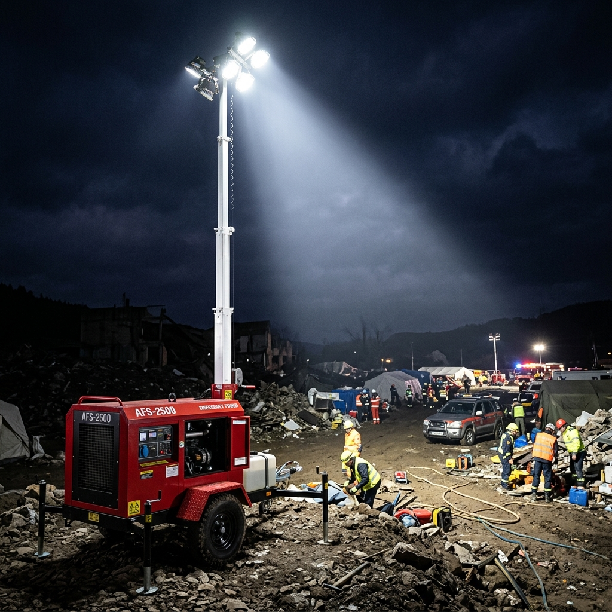

Elektrik altyapısının çöktüğü alanlarda yüksek kapasiteli aydınlatma ve güç desteği.
AFAŞ AFS-2500 Aydınlatma Kulesi, yerli ve özel üretim olan inovatif bir aydınlatma çözümüdür. Elektrik altyapısının çöktüğü afet bölgelerinde, şantiyelerde ve açık alanlarda yüksek kapasiteli aydınlatma ve güç desteği sağlar.
Teleskopik direk sistemi ile hızlıca yükseltilen kule, geniş bir alanı etkili şekilde aydınlatır. Entegre jeneratör sayesinde tamamen enerji bağımsız çalışabilir. Sahada yüksek görünürlük ve güvenlik sağlamak için tasarlanmıştır.